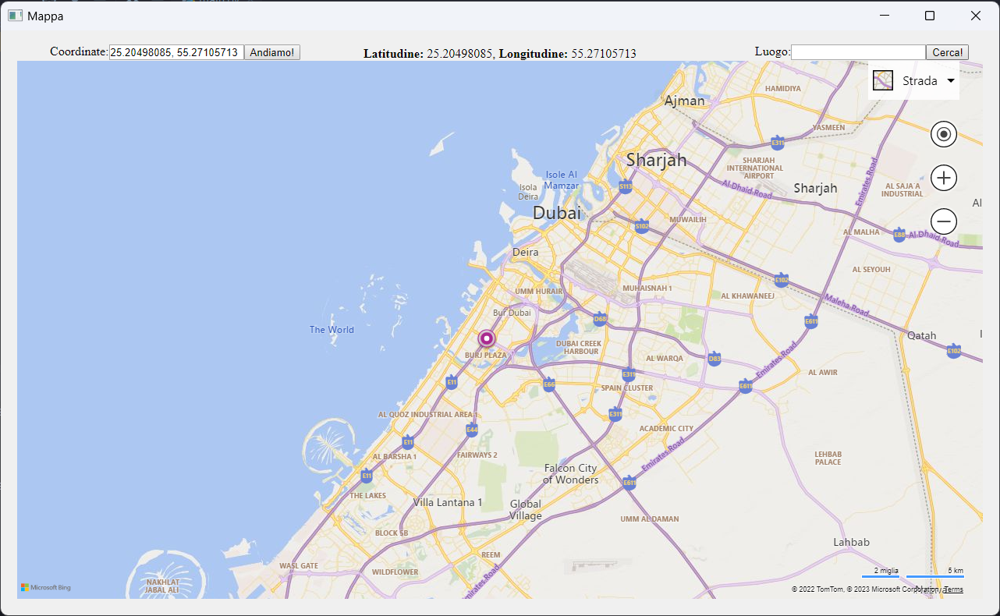

Fase di Sviluppo
La fase di sviluppo è stata una delle fasi più difficili da fare. Il pacchetto si basa principalmente sull'utilizzo del modulo requests da li si connette a Bing Maps per ricavare le coordinate dei luoghi, di conseguenza, dai luoghi ricavare le coordinate infine anche per calcolare la distanza tra due punti del globo.
Come Utilizzare il Pacchetto
Stavolta l'utlizzo del pacchetto è un po più complesso. Importiamo dal pacchetto WordWideMap la sezione WordWideMap, da li poi possiamo:
1. Utilizzare il metodo WordWideMap() e nelle parentesi inserire le coordinate in un luogo;
2. Una volta salvata su una variabile il metodo, dalle coordinate inserite possiamo ricavare il nome della città;
Se invece salviamo su una variabile il metodo WordWideMap, possiamo anche ottenere le coordinate dal nome della città. Volendo possiamo far esprire al programma
l'output in formato tuple. Vi lascio un esempio di codice qua sotto:
from WordWideMap import WordWideMap
Come possiamo notare l'output del primo sarà espresso normalmente con le coordinate, l'altro sarà espresso invece in tuple
wwm = WordWideMap([latitudine], [longitudine])
city_name = wwm.cityName()
print(city_name)
wwm = WordWideMap()
dubai_coordinates = wwm.nameToCoordinates("Dubai")
dubai_coordinates_tuple = wwm.nameToCoordinates("Dubai", istuple=True)
print(dubai_coordinates)
print(dubai_coordinates_tuple)
- Calcolare la distanza tra due luoghi
Guardacaso possiamo anche calcolare la distanza tra due luoghi, la distanza sarà espressa in Km (kilometri), ora ti mostro come fare:
from WordWideMap import WordWideMap
Le coordinate le dovremmo esprire in una variabile di tipo tuple, questo è necessario perché il programma prenderà in automatico le coordinate dal tuple.
Milano = (45.463688, 9.188141)
Roma = (41.902782, 12.496366)
wwm = WordWideMap()
distance = wwm.distanceCalculate(Milano, Roma)
print(distance)
- Convertitore di Misure
Questa è una scelta che poteva servire, ovvero un convertitore, attualmente possiamo convertire le misure espresse in gradi (primi e secondi) in formato decimale,
in modo che: se dobbiamo lavorare con le coordinate abbiamo questa possibilità. Poi abbiamo il metodo per convertire da coordinate decimali in gradi.
Un altro tipo di conversione (molto semplice) è quello di convertire i metri in kilometri e i kilometri in metri.
Per utilizzare il convertore: dalla cartella WordWideMap con tanto di file importare il metodo Converter, ora ti farà un esempio pratico:
from WorldWideMap.converter import Converter
Il programma poi ci resituisce le coordinate da gradi in decimale.
# Rome Coordinates: 41°53′57.12″ | 12°32′42.00″
converter = Converter()
lat = converter.degrees_to_decimal(41, 53, 57.12)
lon = converter.degrees_to_decimal(12, 32, 42.00)
print("Lat: {}, Lon: {}".format(lat, lon))
- Usare la GUI
Come tutti i miei pacchetti anche qui abbiamo la gestione di esso su GUI, ora ti spiego come usarla:
Dal file gui.py situata nel pacchetto WordWideMap importiamo GuiMappa, una volta fatto utiliziamo il metodo start
per avviare la gui: GuiMappa.start(). Ora ti mostro un esempio:
from WordWideMap.gui import GuiMappa
Il programma poi aprirà la gui linkata qua sotto:
GuiMappa.start()

Con la gui possiamo interagire con la mappa, andare alle coordinate che possiamo inserire in alto a sinistra. Al centro troviamo un label dinamico che si aggiorna ad ogni movimento di cursore visualizzandoci le coordinate di esso, infine in alto a destra abbiamo il localizzatore delle città, noi mettiamo il nome della città e ci restituisce le coordinate attraverso il label dinami e ci appariranno le coordinate del luogo direttamene nella casella di input delle coordinate.